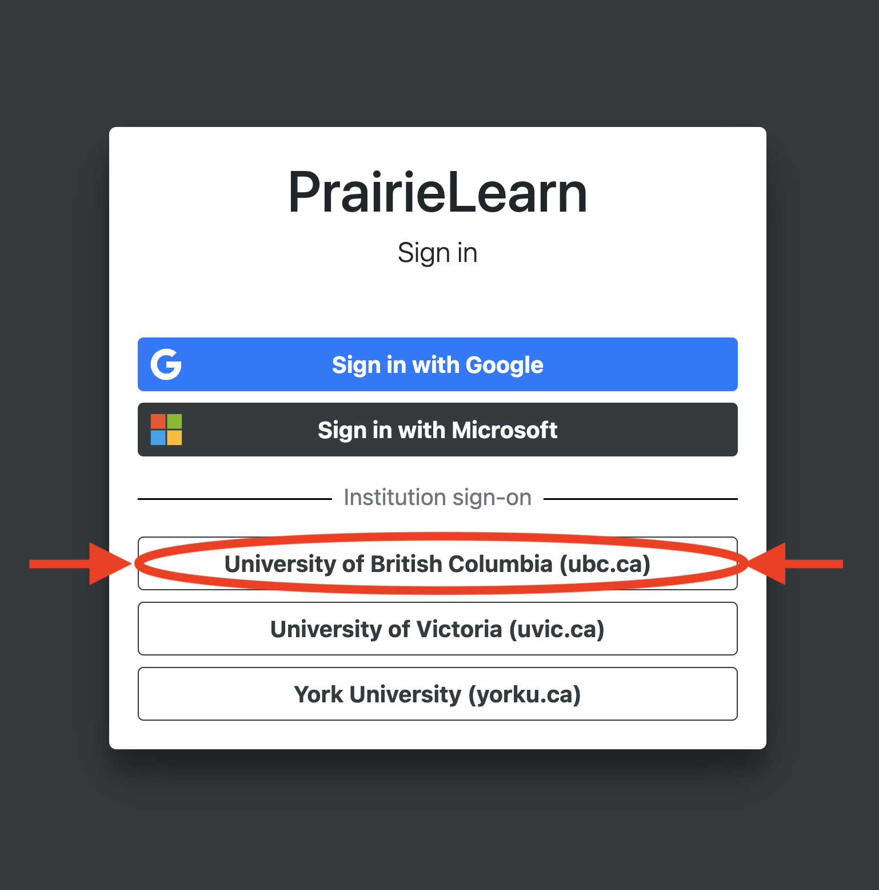

Unsyllabus#
Teaching Team ✏️
Information about the teaching team and how to contact us.
Course Schedule 🗓
A table of course topics and a week-by-week plan of what we intend to cover.
Doing Well 😊
Strategies and tips on how to do well in this course.
Getting Help ❤️🩹
Learn how to get help and get support if you’re struggling, academically or otherwise.
Evaluation ✅
Information about the grading system and evaluation scheme for this course.
Teaching Philosophy 🧙♂️
How this course will be taught and how humans learn (you may be surprised!).
Changes ✍️
List of changes made to the Unsyllabus since the start of term, and a rationale.
Honesty & Integrity 😇
Completing this course with honesty and integrity. Examples of things you can and should not not do.
Special Days 🤧💝🕌🥳
What to do if you have to miss things because of special days (including getting sick).
Important Details#
Name |
Description |
|---|---|
Course |
CPSC 100 |
Term |
2025 Winter Term 1 |
Instructor |
Dr. Firas Moosvi (he/his/him) |
Lectures |
Monday, Wednesday, Friday 16:00-17:00 in MCML 360 |
Mode of Delivery |
In-person: All course activities and assessments will be conducted in-person |
Canvas URL |
|
Course Discussion |
To ask any course-related questions, use private (personal, not useful for anyone else) or public (helpful for other) messages on Ed Discussion |
You can find all the important term dates in the UBC Academic Calendar.
What do I need to purchase for this course?#
Being very conscious of the high tuition and technology costs, we have made efforts to remove the additional cost of taking this course. All course content, references, and resources provided in this course are free and open source, and can be considered open educational resources (OER).
Contact Us#
Team Member |
Pronounce as |
Contact |
Office Hour |
|---|---|---|---|
Dr. Firas Moosvi (he/his/him); Instructor |
Fur-az Moose-vee |
TBD |
|
TBD |
|||
TBD |
TBD |
TBD |
|
TBD |
TBD |
TBD |
|
TBD |
TBD |
TBD |
Evaluation#
The grading scheme for this course is:
Grading Scheme#
Item |
Weight |
Due date(s) |
Category |
|---|---|---|---|
Learning Logs |
7% |
Fridays at 6 PM |
Homework |
Labs |
18% |
Fridays at 6 PM |
Homework |
Term Project |
25% |
TBD |
Project |
Tests |
50% |
Weekly |
Exam |
Passing requirements#
Students must satisfy ALL conditions to pass the course:
Pass the Lab component with a grade of at least 50%,
Pass your seven (7) bests Tests (together) with a score of at least 50%,
If a student does not satisfy these requirements, the student may be assigned the lower of their earned course grade or 45% in the course.
Late or Missed Assignments and/or Exams#
Late Policy#
Attention
Many assessments in the “Homework” category may be submitted after the original deadline for partial credit. The amount of partial credit and the corresponding deadlines can be found in PrairieLearn.
Assessments in the “Exam” category must be completed in the time window specified for that particular assessment.
Note
Please refer to the UBC Calendar for details on exam clashes, hardships, and cancellations.
What if I miss labs, tests, or the exam due to an illness, health, or other personal situations?#
Normally, most assessments in this course have multi-day window or a generous grace period, which should suffice to account for unexpected but short-term absences.
For longer term absences (a week or more), please contact the instructor to discuss options.
If ill health is an issue, students are encouraged to seek attention from a health professional. UBC’s Student Health and Wellbeing website has links to many different resources.
Tip
Don’t be shy or embarrassed to use these health services, and if the first one doesn’t work for you, try another!
What should I do if I need accommodations to be successful in this course?#
Please see Accommodations
Compassion#
Overall, my philosophy is that I think we could all use some extra compassion and humanity wherever and whenever it’s possible. If you’re going through something that is affecting you (in the course or otherwise), you are always welcome to come and talk to me about it. If I am not able to help you myself, then I can probably direct you to the right person or resource on campus. If you need extra help, or extra time to deal with something you’re going through, just ask. You will never owe me an explanation about your physical health, mental health, or those of your family members, friends, etc… I will believe you, and I will trust you. I will not judge you, nor think any less of you. I will do everything in my power to work out something that is both reasonable and fair. This, I promise!
Learning Intentions#
At the highest level, this courses has three main goals.
Students who complete this course will be able to
explain foundational computing concepts,
explore applications built on these foundations,
describe the implications of the applications.
Said more formally, students who actively engage with the materials will be able to:
Foundations#
use abstraction and decomposition to clarify and simplify the critical pieces of a problem;
choose appropriate models and representations to aid in solving the problem;
recognize potential shortcomings in a model or solution;
explain at a high level how the computer works;
Applications#
explain specific computing algorithms;
use algorithms to demonstrate a proficiency in describing processes
create data products by utilizing applications
Implications#
provide and explain examples of how computers impact society;
discuss the advantages and limitations of recent computing advances;
assess the veracity of statements based on foundational concepts
Schedule#
This is the tentative plan for CPSC 100 this term. Things may change depending on many factors so this is subject to change.
Week |
Week of |
Topic |
LL |
Lab |
Project |
Test |
|---|---|---|---|---|---|---|
1 |
Sep 1 |
Introductions |
LL0 |
Lab 0 |
- |
|
2 |
Sep 8 |
Algorithms and Using AI |
LL1 |
Lab 1 |
T1 |
|
3 |
Sep 15 |
Algorithms and Programming |
LL2 |
Lab 2 |
T2 |
|
4 |
Sep 22 |
Programming |
LL3 |
Lab 3 |
P1 |
T3 |
5 |
Sep 29 |
Data Representation |
LL4 |
Lab 4 |
T4 |
|
6 |
Oct 6 |
Internet and HCI |
LL5 |
Lab 5 |
P2 |
T5 |
7 |
Oct 13 |
Catch-up Week |
- |
- |
- |
|
8 |
Oct 20 |
Artificial Intelligence |
LL06 |
Lab 6 |
T6 |
|
9 |
Oct 27 |
Artificial Intelligence |
LL07 |
Lab 7 |
P3 |
T7 |
10 |
Nov 3 |
Data Mining |
LL08 |
Lab 8 |
T8 |
|
11 |
Nov 10 |
Fall reading break |
- |
- |
- |
|
12 |
Nov 17 |
Data Provenance |
LL09 |
Lab 9 |
P4 |
T9 |
13 |
Nov 24 |
Data Visualization |
LL10 |
Lab 10 |
T10 |
|
14 |
Dec 1 |
Final Projects |
LL11 |
- |
P5 |
T11 |
Getting Help#
The best way to get personalized help in this course is to attend the “Student Hours” we have scheduled for this course. This is time that the instructor and TAs have set aside to help YOU personally, 1 on 1! I understand it might feel intimidating to come to Student Hours, but we don’t bite! We would love to hear about you, what your interests are, and if you have any career advice. If nobody comes to the Student Hours, we end up sitting all by ourselves, all alone, and sad.
A few other notes:
We will be using Ed Discussion for Announcements in this course.
For all course-related questions you can reach out to the teaching team including instructors and TAs via Ed Discussion.
You are encouraged to post questions publicly whenever possible so others can benefit; however, do not publicly post assessment solutions (even partial ones).
For issues which are not suitable for public posts, you can send
A private message to the instructional team on Ed Discussion if you message does not contain personal information; for example, if you have a question about your solution code.
By email to the instructor if your message contains personal information; for example, your CfA letter or a request for concession.
Any student may visit the student hour for any member of the teaching team (TA or instructor)! In other words, you can go to the student hour of ANY TA, not just the one whose lab/tutorial you are registered in.
Why should I take CPSC 100?#
This course will be a LOT of fun, you’ll get lots of practice learning how to solve a whole bunch of different problems in our society. We’ll go through several categories of computational thinking skills including decomposition, pattern recognition, abstraction, modelling and simulation, algorithms, and evaluation. Many of the examples and contexts we’ll tackle are very topical and very much apply to the real world including artificial intelligence and algorithmic ethics.
Syllabus vs. Unsyllabus#
Traditionally, there has been a culture at most higher education institutions for every course to have a document that sets expectation for how the course will be conducted, what students will be expected to do, and what they will learn in the course. The purpose of that document was for the instructor to communicate “what the course will be about” to students so they know what they’re getting themselves into. This document is typically called a “Syllabus” or a “Course Outline”. Over the years however, this document has morphed into something like a contract - a “terms of service” that students implicitly agree to by registering for the class.
This makes me somewhat uncomfortable as an educator - I don’t want to legislate how you learn and what you need to do to learn. I also don’t want there to be an unchangeable legal document governing the interactions between an instructor and a student. What I do want is to give you suggestions and guidelines supported by my personal experience as well as the latest literature on teaching and learning.
That being said, perhaps there are some advantages to having some elements of a course codified in a “legal document” - the “Syllabus”. For instance, the instructor for the course, the calendar course entry, the term dates, the final exam period, the passing criteria, how to file a grievance or complaint, and your responsibilities to uphold UBC’s commitment to equity, diversity, and inclusion. The items above are indeed permanent and unchanging, and deserve to be in the syllabus.
Other things, such as what you will learn, how and when you will do it are more flexible and fluid. For that, we have this unsyllabus.
What is the Unsyllabus?#
In contrast to the syllabus, the unsyllabus is not a legal document. Instead, it is a living document that serves students and adjusts to their needs and feedback. Dr. John Warmer describes this best in his article, “A syllabus is not a contract”:
… this [un]syllabus is not a contract, it is a living document which reflects the experiences, emotions, philosophies, and goals I bring to a particular course.
and also:
An [un]syllabus as a plan is a lot like an itinerary before a trip. There’s some definite highlights we need to hit, but if something that seems cool and worth doing crops up unexpectedly, we need to seize that opportunity in the moment. If something really bad happens (the equivalent of a norovirus breakout on a cruise ship) we may need to abandon something previously scheduled entirely.
Summary#
Having an adaptive syllabus is important to me as it allows me to be responsive to your feedback in a meaningful way. I invite you to be co-contributors to this unsyllabus, and use the tools provided to add your own annotations, questions, and suggestions on making this syllabus work for you. At various points in the term, I will invite you to provide feedback on how things are going in the class.
Document |
Status |
|---|---|
Syllabus |
University-mandated, like a legal contract and contains university rules about conduct and behaviour; elements will not change. |
Unsyllabus |
Living document, responsive to student feedback and adaptable to circumstances; elements may change, usually to the benefit of students and of learning. |
Important
Please note that I have your best interests in mind, and it is highly unlikely that I will ever change the unsyllabus in a way that negatively affects the class, or even individual students. If you believe a change is affecting you negatively, please reach out to me on Ed Discussion.
Unsyllabus changes#
In this section, I will outline any changes that have been made to the unsyllabus as we go through the course. We will do our best to follow the plan outlined in this unsyllabus, but in case things go south, I will need to make adjustments to the contents and the schedule.
Any major changes to the syllabus (this page) will be documented here, as well as the date the change was made.
Change Date |
Summary |
Rationale |
|---|---|---|
None yet made |
How do I do well in this course?#
To prepare yourselves for this course, remember that:
Learning is a contact sport.
Memorizing is not learning.
Understanding is learning, and understanding should be your goal (not grades).
We’ll do lots of tests.
And some ingredients for your success:
Plan.
Prepare.
Engage.
Practice.
Collaborate.
Do not be fooled by familiarity of the material.
Important
These guidelines were adapted from Dr. Simon Bates’ Physics 117 course from UBCV.
… but I’ve never been good at computer science!#
That’s okay! You’re still more than welcome in this course. I will do everything I can (within reason) to still make the course accessible to you. This course is designed with your success in mind. There are multiple opportunities for you to learn from your mistakes and improve your grades in nearly every aspect of the course. In my opinion, the best learning happens when folks are given the opportunity to make mistakes so they get over their fear of trying new things!
To summarize, if you’ve never been “good” at computers, come into the course with a healthy attitude, a desire to work for your success, and I have no doubt you will be successful in this course. If you ever want to talk about the course, or have any feedback you want to give me, do not hesitate to reach out to me!
… but I don’t even like computers!#
Believe it or not, I have no expectation that every student that takes my course will have an undying passion for the subject. Some of you may be forced to take this course by your programs, faculties, career interests, etc… Sometimes we all have to take courses that we think we don’t like, or enjoy. That’s fine! No judgement from me, you are more than welcome in this course. I just ask that you not make any snap judgements about the class, the material, the instructor (me), or the teaching team. Whatever your motivations are for taking this course, give us a chance, maybe you don’t HAVE TO be miserable taking this course! You might even enjoy the feeling of community and camaraderie that develops over the course of the semester 🤞.
I hope you’re not miserable, if you do feel miserable, come talk to me - maybe I can help you see the light at the end of tunnel?
Course Tools#
Warning
I will be the first to acknowledge that my courses are usually heavily reliant on learning technologies. I strongly believe that learning technologies are essential (for me) to give you my students a good experience in the course. Many times during the course you may be frustrated why we need to use so many different tools, and why there isn’t one tool that does everything. At the moment, the reality is that many learning technologies often only do one thing very well. This of course means that other functionalities take a back-seat and exist merely to check a box on their marketing website (just so they can say they have the feature, even though it is a crappy implementation of that feature).
I hope you will be patient with all the tools used in this course, and I hope I can demonstrate value to you by using them in our course.
Required Tools#
In this course, we will be using the following required learning technologies (privacy policies linked):
Ed Discussion [Required]#
In this course, we will be using Ed Discussion for class discussions. You will need to sign up for a (free) Ed Discussion account to participate in the discussions for this course. The system is highly catered to getting you help fast and efficiently from classmates, the TA, and myself.
Tip
In general, please do NOT email questions to the instructor and TAs unless it is a legitimate emergency (or if you cannot access Ed Discussion). If you do this accidentally, it’s okay - we will send you an automated response letting you know that emails will not be answered and you should re-post your question on Ed Discussion.
Warning
Data on Ed Discussion is stored on servers outside Canada. When you access this site by clicking on the link through Canvas, you are being transferred to these servers. In order to protect your identity, UBC obfuscates your user ID before it is sent to the site. However, Ed Discussion does require you to create an account on their servers. While Ed Discussion adheres to strict U.S. privacy regulations (FERPA), UBC cannot guarantee security of your private details on servers outside of Canada. Please exercise caution whenever using personal information. You may wish to use a pseudonym to protect your privacy if you have concerns.
PrairieLearn#
PrairieLearn is an open source, extensible online assessment platform built on modern web technologies and is available to students at no cost. This system replaces commerical textbook publisher platforms for homework assignments such as MasteringPhysics, WileyPlus etc. In the past, instructors were forced to use these expensive options and pass these costs on to the students, to the tune of $60/student per course with just a temporary “subscription” to a textbook. Today, thanks to the emergence of high-quality open-education resources (OERs), student advocacy (see the UBC Senate policy) and institutional support (the TLEF and the ALT-2040 projects), and free and open source software (FOSS) we have alternatives.
In the first week of class, we will do a demo of the PrairieLearn platform together, but if you’d like to get started, you can join the course and do the first assignment by clicking here.
Important
You should login by clicking “Sign in with UBC” and provide your UBC CWL credentials:
What type of information will I collect about you in this course?#
I am very aware of the surveillance culture that has permeated our society and heralded the End of Privacy as we know it. That being said, as an instructor, I care tremendously about your learning and the course-related data that is collected about you is extremely valuable. Broadly speaking, this relatively new field is called Learning Analytics. Learning Analytics involves the collection and analysis of data about learners for the express purpose of improving their learning by optimizing teaching and learning practices.
All of the tools above log data about your activity that can be used to improve the quality of teaching and learning. In this course, I intend to use this information to:
view overall class progress (in aggregate),
track your personal progress in order to provide you with personalized feedback,
track participation in discussion forums
improve the course and your learning,
explore students actions in the course,
provide you feedback on your progress.
Unfortunately, at the moment it is not possible to opt-out of the data collection process, but if you like, you may opt-out of the process where I use the data to give you personalized feedback. To opt-out, please complete this form at any point in the course. You may opt-out with my full support, I respect your decision and applaud you for your netizenship!
Teaching Philosophy#
For a detailed description of my teaching philosophy and values (including a list of references and citations), you can read it here. Here are the key principles I intend to apply in this class:
Student learning is vastly improved through active learning
Learning technologies must be leveraged to scale instructor effort across multiple classes.
Inter-disciplinarity is the future of education.
Effective teaching is inclusive teaching.
How will this course be taught ?#
This course will be taught as a Blended Learning classroom where some elements of a flipped classroom will be mixed with a more traditional coding classroom with live demos, clicker questions, and worksheets. Briefly, this requires students to complete some readings, look at lecture slides or watch videos and engage with the assigned reading before the classroom meeting (knowledge transfer). During the class meeting, the instructor guides students through clicker questions, worksheet problems, and other activities to help the students make sense of the material (sense-making). See Fig. 1 for a mental model of how learning works [Ambrose et al., 2010].
{kind=link}
Fig. 1 To develop mastery in a concept, students must first acquire the necessary skills, then practice integrating them, and finally know when to apply what they have learned. This figure was adapted from Figure 4.1 of the book “How Learning Works”. The terms “knowledge transfer” and “sense-making” applied in this context is generally attributed to Dr. Eric Mazur.#
What does this mean in practical terms?#
Fig. 2 shows a handy table to help guide you and organize your learning in this course:
{kind=link}
Fig. 2 This table describes how I think each course activity should be classified between knowledge transfer and sense-making.#
Academic Integrity#
How do I go through this course with integrity?#
I want to be proud of your work in this course, and I want YOU to be proud of yourself as well! That cannot happen if you make unethical decisions, including (but not limited) to cheating or plagiarism. According to the scientific literature, the most common reasons students cheat are:
Fear of failure and life consequences.
Peer pressure, including the pressure to provide your answers when others ask for help.
Perceived societal acceptance of cheating (such as Lance Armstrong, Barry Bonds, Enron, Wall Street & The Big Short).
Desire for success without the time/desire to put in the work needed.
Strict deadlines and due-dates.
Requirement from instructors to memorize facts, figures, equations, etc…
High-stakes exams with no recompense for “having a bad day”.
Peers cheating with no consequences or penalties.
Unclear expectations on what constitutes academic dishonesty.
Inadequate support from instructor and teaching team.
However, taking short-cuts when learning leads to poor learning. I have tried extremely hard to make this course focused on learning rather than grading, and where grading is needed to have policies that are as student-friendly as possible. In particular, I hope (and expect) that the following features of the course should eliminate your temptation to cheat or plagiarize:
48 hours grace-period on all due dates.
Long testing window so you can start the tests when you are comfortable.
No high-stakes exams (the single largest assessment item is the final exam).
Plenty of TA and instructor student hours and several outside of normal business hours.
Class website that outlines exactly what you should do when to help you manage your time.
Tonnes of supplemental materials including other instructional videos in case you want a different perspective.
Weekly prompt to accept the integrity pledge to keep you accountable.
A true willingness from the instructor (me) to help you learn and succeed in this course!
With these features, and several other little things, I sincerely hope that you will consider completing this course with maximum integrity so that you never have to feel guilty, ashamed, or disappointed in yourself and your actions!
A more detailed description of academic integrity, including the University’s policies and procedures, may be found in the UBC Academic Calendar.
What is considered academic dishonesty in this course?#
The line between what constitutes acceptable versus unacceptable behaviour can be blurry, but here is a list of things which are definitely considered academic dishonesty in CPSC 203:
Asking others to see their work (whether question by question, or all at once).
Sharing your work with others.
Doing tests collaboratively (tests must be done by yourself and alone).
Communicating test questions and/or answers to others. We all benefit from the scheduling flexibility that PrairieLearn provides, but that means even if you have completed a test you cannot talk about it because other students may not have taken it yet.
Sharing any course material onto Chegg, Course Hero, Slader, or other similar sites.
Searching for solutions to course material on Chegg, Course Hero, Slader, or other similar sites.
Blindly googling the question in hopes of finding someone who had a similar question and then copying their answer. However, googling to find resources to understand specific concepts or general ideas is highly encouraged!
Having a tutor/friend/nemesis complete and submit your work for you.
Copying and pasting code, equations, text explanations, prose, etc… without attribution.
Manipulating the learning platforms we use to reverse engineer the randomization algorithms, hacking the timer functionality, or other similar technical malfeasance.
What should I think about if I’m considering withdrawing from the course?#
First of all, I’m sorry you’re having trouble and are considering withdrawing from the course! This is no problem, and I will not be personally offended or upset you need to do this, I encourage you to do what you feel is right for you and your situation. Below is some information that might be helpful for you in making the decision.
Warning
Please note that it is the student’s responsibility to check the withdrawal dates as [listed in the UBC Calendar](https://vancouver.calendar.ubc.ca/dates-and-due dates).
Withdrawal type |
Effect on Transcript |
Tuition refund |
|---|---|---|
Before 11:59 PDT on Monday, September 15, 2025 |
None |
100% refund |
Before 11:59 PDT on Friday, October 24, 2025 |
W on transcript |
|
After 11:59 PDT on Friday, October 24, 2025 ^ |
W on transcript |
^ Note: Withdrawal after this date cannot happen without additional approvals, see here.
There are factors other than money and your transcript to consider as well, including your mental health, graduation requirements/timelines, course load requirements, eligibility for student loans, bursaries, scholarships etc. I advise you to read a list of some considerations here and consult with an advisor if you have additional questions.
Warning
International students have additional factors to consider when withdrawing - you are urged to follow-up with an advisor and see the frequently asked questions here.
Acknowledgements#
The syllabus was constructed and adapted from many other templates and examples. Below is the list of resources I have used to put this syllabus together:
Physics 117 (Instructor: Dr. Simon Bates)
Psychology 417A-951 (Instructor: Dr. Catherine Rawn)
Land Acknowledgement#
UBC’s Point Grey Campus is located on the traditional, ancestral, and unceded territory of the xwməθkwəy̓əm (Musqueam) people. The land it is situated on has always been a place of learning for the Musqueam people, who for millennia have passed on their culture, history, and traditions from one generation to the next on this site.

References#
Susan A. Ambrose, Michael W. Bridges, Michele DiPietro, Marsha C. Lovett, and Marie K. Norman. How Learning Works: 7 Research-Based Principles for Smart Teaching. Jossey-Bass, San Francisco, CA, 2010. ISBN 978-0-470-48410-4.